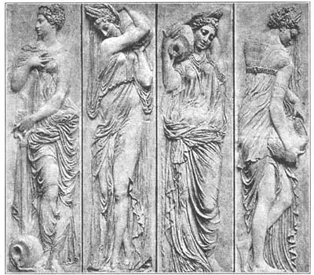
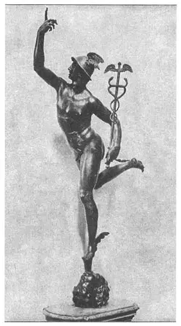

49
A.M. OR AFTER MICHELANGELO
米开朗基罗前后

WHAT goes up must come down. Sculpture had been going up. It had been getting better and better and better sincle the beginning of the Renaissance. Renaissance sculpture got’ way up to the top under the great Michelangelo.
Then
it
came
down!
For two hundred years after Michelangelo there were hundreds of sculptors, but only a very few good ones. One of these good ones was Cellini, the goldsmith who made the bronze Perseus.
There were two more good sculptors after Michelangelo who were not Italians like almost all the other great Renaissance sculptors. One, named Jean Goujon (Goo-jonh’), was born in France. The other, called John of Bologna (Bo-lon’ya), came from the town of Douai in Flanders.
Goujon is best known for some beautiful water nymphs that he carved in very low relief. Water nymphs are like water fairies or sprites, but they don’t have wings like fairies. Goujon carved the water nymphs in the most graceful way you can imagine. Each nymph is carved on a separate strip or panel of marble and as the panels are high and narrow, it must have been hard for Goujon to make each nymph so graceful and yet so different from every other one. To help show they were really nymphs of the water, Goujon made each one with a jar from which she pours the water. Many years after Goujon was dead his water nymphs were used to decorate a fountain in Paris called the Fountain of the Innocents. Now they are in the Louvre in Paris.
I told you that, John of Bologna was born in Flanders, but he didn’t stay there. He moved to Italy and lived in Italy the rest of his life. All his important work was done in Italy. As a famous fountain he made was placed in the city of Bologna in Italy, people began to think he was a man of Bologna and called him Giovanni da Bologna, which means John of Bologna.

No.49-1 RELIEFS FROM THE FOUNTAIN OF THE INNOCENTS（《无辜者之泉·浮雕局部》）
GOUJON (古戎 制）
Courtesy of The University Prints
I’ve often heard people say when they get some joyful news, “I’m walking on air!” But that is really pretty hard to do. Don’t try it.
Giovanni da Bologna made a statue that is walking on air. How? A statue can’t walk on air any more than a person can! But this statue is walking on air. It is called the Flying Mercury and is Giovanni da Bologna’s masterpiece. Now, to make a Mercury flying through the air, there shouldn’t be anything but air to hold him up. So Giovanni made Mercury held up only by the wind. The wind is a bronze wind and is shown coming out of the mouth of a bronze wind god. The wind is blowing on the bottom of Mercury’s foot. Look closely and you can see the head of the wind god facing up toward the sky.
Mercury really looks as if he were running in the air as well as flying with his winged cap and sandals and caduceus . The caduceus is Mercury’s staff or wand that has the two snakes curling round it. Mercury was believed to be the messenger of the gods. He was also the god of commerce and hospitality and flocks and herds and speechmaking and sly tricks and dreams and peace and traveling and health and riches. The Greeks believed he invented the alphabet and numbers and astronomy and music and boxing and weights and measures and gymnastics and growing olive orchards. So you see what an important fellow he was. His caduceus is used as the sign of doctors in the United States army because Mercury was the god of health. When animals or people quarrel the caduceus was supposed to make them friends again. Mercury once saw two snakes fighting. He threw his staff down between them and the two snakes curled peacefully around it. So Mercury kept them there to show the power of his staff.
Nowadays when people think of Mercury, they generally think of him as looking like this Flying Mercury of Giovanni da Bologna. That statue fits my idea of how a flying Mercury should look. Does it fit yours?

No.49-2 FLYING MERCURY
（《飞翔的墨丘利》）
BOLOGNA（博洛尼亚 制）
【中文阅读】
有升必有降。雕刻过去一直处于上升态势。自文艺复兴以来，雕刻的发展愈来愈好。在伟大的米开朗基罗带领下，文艺复兴时期的雕刻达到了顶峰。
接着，
它
开始
走下坡路！
米开朗基罗之后的二百年间，虽然也出现过好几百位雕刻家，但真正优秀的却寥寥无几。那个铸造帕尔修斯青铜像的金匠切利尼算得上优秀中一位。
米开朗基罗之后，还有两三位算得上优秀的雕刻家。他们与文艺复兴时期其他的伟大雕刻家不同，他们不是意大利人。其中一位叫让·古戎，生于法国，另一位叫博洛尼亚的约翰，来自佛兰德斯的杜埃城。
古戎以雕刻水边美女浅浮雕而出名。这些水边美女就像传说中的水仙或水精一样，只是没有仙女一样的翅膀。古戎雕刻的水边美女优雅非凡，引人遐想。她们每位都刻在一块单独的大理石板上。对古戎来说，大理石板既高又窄，所以要把少女浮雕 刻得优雅非凡又神态各异绝非易事。为了更好地展示水边女神浮雕的真实感，古戎让每位少女都手捧一只水罐，呈倒水状。古戎去世多年后，他的这些水仙浮雕曾被用于装饰巴黎的一座名叫《无辜者之泉》的喷泉。如今，这些浮雕保存在巴黎的卢浮宫。
我前面说过，博洛尼亚的约翰出生在佛兰德斯，但他没在那里生活。他移居意大利，在那儿度过一生。
约翰所有的重要作品都是在意大利完成的。他建造的那座喷泉名气很大。由于这喷泉安放在意大利的博洛尼亚，所以大家都以为他是博洛尼亚人，就称他博洛尼亚的乔凡尼，意思是博洛尼亚的约翰。
我经常发现人们在听到一些好消息时会说：“我高兴地要飞上天了。”但实际上，飞上天是很难做到的。千万不要去试啊。
但是，博洛尼亚的乔凡尼还真的刻了一座飞翔的雕像。怎么可能呢？人不可能飞上天，雕像就更不能了。但这座雕像真的飞起来了。雕像名叫《飞翔的墨丘利》，堪称博洛尼亚的乔凡尼的代表作。既然要雕一座飞翔的墨丘利像，那支撑物只能是空气。所以，乔凡尼就用风来托起墨丘利。风正从风神口中吹出，从墨丘利的脚底往上吹。风和风神都是青铜制品。近看可见脸朝天的风神头像。
雕像墨丘利脚穿飞行鞋，头戴飞行帽，手握魔杖，看起来真的在飞翔。魔杖上缠着两条蛇。墨丘利公认是众神的信使。墨丘利还是商业、好客、畜牧、演说、诡计、梦想、和平、旅行、健康和财富之神。希腊人认为墨丘利发明了字母表、数字、天文、音乐、拳击、举重、度量衡、体操以及橄榄果园种植。由此可见他的重要性。现在，墨丘利魔杖在美国军中被用作医生的标志，因为墨丘利是健康之神。据说，他的魔杖能使争吵的动物或人重归于好。有一次，墨丘利看见两条蛇正在撕咬，他将魔杖丢到两蛇中间，两条蛇便安静地缠绕在魔杖上。于是，墨丘利就让这两条蛇留在魔杖上，以彰显魔杖威力。
如今，人们只要一提起墨丘利，就会想到博洛尼亚的乔凡尼的《飞翔的墨丘利》中墨丘利的形象。这雕像正符合我心中墨丘利飞翔的样子。你呢？